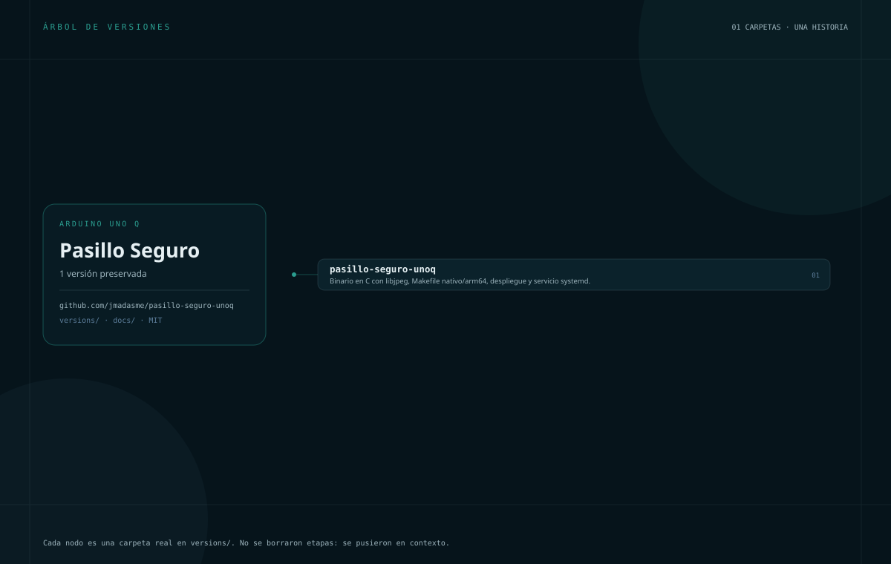

pasillo-seguro-unoq
37 archivosBinario en C con libjpeg, Makefile nativo/arm64, despliegue y servicio systemd.
Ver carpetaEl mismo pasillo vigilado, ahora en C con libjpeg: movimiento, corredor central y tiempo al contacto en un binario liviano.

Una alternativa en C al detector en Python: lee el stream MJPEG, decodifica con libjpeg, modela el fondo, sigue el contorno dominante del corredor y publica una página con borde verde, ámbar o rojo. Pensado para medir cuánto se gana al bajar de nivel de lenguaje.
Un detector en Python resuelve el problema, pero en una placa con poca CPU cada milisegundo cuenta y el intérprete se lleva una parte del presupuesto.
Reescribir el pipeline en C sobre libjpeg, con buffers fijos y un único binario que sirve la página y procesa el stream.
Alternativa en C al detector Python: lee MJPEG, decodifica con libjpeg, modela el fondo, sigue el contorno dominante del corredor y publica una página con borde verde, ámbar o rojo.
Alternativa en C al detector Python: lee MJPEG, decodifica con libjpeg, modela el fondo, sigue el contorno dominante del corredor y publica una página con borde verde, ámbar o rojo.
Los fragmentos son del código real de versions/pasillo-seguro-unoq. No mide distancia métrica, no ve objetos estáticos y no es un sistema de seguridad certificado; el build ARM depende de la libjpeg 6.2 incluida.
Cada carpeta conserva una etapa del proyecto. No se borraron las anteriores: se pusieron en contexto.
Binario en C con libjpeg, Makefile nativo/arm64, despliegue y servicio systemd.
Ver carpetaPasillo Seguro es la reescritura en C del detector de pasillo: lee un stream MJPEG, decodifica con libjpeg, reduce la imagen, modela el fondo por diferencia de frames y estima riesgo por cercanía, crecimiento y velocidad del objeto dominante. Un único binario sirve la página y procesa el video, sin intérprete Python en el camino caliente.
Está pensado para quien compara el costo de un runtime interpretado con el de C en una placa modesta. En la UNO Q sostiene 12,3 fps a 1080×1920 con unos 79 ms de latencia; el mismo binario en un notebook x86_64 llega a 37,1 fps. La página cambia el borde del video según el riesgo. Es una demostración técnica: no mide distancia métrica, no detecta objetos estáticos y no reemplaza un sistema de seguridad certificado.
El README original de la versión de referencia, completo.
Percepción local para caminar por un pasillo concurrido. Un teléfono con IP Webcam transmite video por la red local; la Arduino UNO Q lo procesa sin nube y sirve una página web con el video anotado. El borde de la imagen cambia de color según el riesgo de choque:
El backend está escrito en C (servidor HTTP, cliente MJPEG, decodificación JPEG, visión y riesgo). La interfaz es HTML/CSS/JavaScript servida por el propio binario. No se instala nada en la UNO Q para ejecutarlo: usa la libjpeg que ya tiene el sistema.
Teléfono (IP Webcam) Arduino UNO Q Teléfono / tablet
┌──────────────────┐ MJPEG/LAN ┌─────────────────────────┐ HTTP ┌──────────────────┐
│ cámara + stream │ ────────────► │ pasillo-seguro (C) │ ──────► │ página web local │
│ 192.168.x.x:8080 │ │ decode + visión + riesgo│ │ borde verde/rojo │
└──────────────────┘ │ HTTP :8020 + MJPEG out │ └──────────────────┘
└─────────────────────────┘
pasillo-seguro, puerto 8020.scripts/servicio.sh y arranque automático opcional por cron.make test (unitarios C + integración con fuente sintética).| Escenario | Resolución | FPS procesados | Latencia |
|---|---|---|---|
| UNO Q + teléfono real (MJPEG LAN) | 1080×1920 | 12,3 fps | ~79 ms |
| Notebook (mismo binario C, x86_64) | 1080×1920 | 37,1 fps | ~26 ms |
| Fuente sintética en la UNO Q | 640×480 | ~12 fps (tope de salida) | — |
El teléfono de prueba estaba en 1080p vertical y la UNO Q sostuvo 12 fps con procesamiento completo. La resolución de proceso se adapta al aspecto de la entrada (108×192 para vertical, 192×144 para horizontal).
gcc y aarch64-linux-gnu-gcc
(sudo apt-get install -y gcc-aarch64-linux-gnu), más los headers de libjpeg.
El binario se copia a la placa; no hace falta compilar en la UNO Q.http://192.168.1.50:8080.Desde la notebook, en la carpeta del proyecto:
./scripts/build_arm64.sh
./scripts/deploy_unoq.sh
deploy_unoq.sh compila, copia el binario, web/, el script de servicio y
reinicia en el puerto 8020. No usa sudo y preserva data/.
Si preferís hacerlo a mano:
scp pasillo-seguro-arm64 arduino@<IP_UNO_Q>:/home/arduino/pasillo-seguro-unoq/pasillo-seguro
scp -r web arduino@<IP_UNO_Q>:/home/arduino/pasillo-seguro-unoq/
ssh arduino@<IP_UNO_Q> 'cd ~/pasillo-seguro-unoq && ./scripts/servicio.sh start'
En el teléfono (o en una tablet) abrí:
http://<IP_DE_LA_UNO_Q>:8020/
La UNO Q debe tener una IP fija o reservada en la red local. Se puede ver con
hostname -I en la placa. La página se sirve desde la UNO Q; no depende de
internet.
El teléfono puede ser cámara y pantalla a la vez. Si Android corta la cámara al abrir el navegador, usá un segundo teléfono/tablet como visor.
localStorage.| Color | Significado | Acción |
|---|---|---|
| Verde | Sin obstáculos en el corredor | Avanzar |
| Ámbar | Objeto en el corredor o acercándose | Atención, reducir velocidad |
| Rojo | Tiempo al contacto corto / objeto muy cerca | Detenerse |
La histéresis evita parpadeos: para pasar a rojo hacen falta varios cuadros de riesgo alto; para volver a verde, varios cuadros de riesgo bajo.
El binario C hace visión clásica, sin redes neuronales:
AVANZA, PRECAUCION,
STOP) en el frame antes de comprimir a JPEG.make native # binario x86_64 para probar en la notebook
make test # tests C + integración con fuente sintética
make arm64 # binario aarch64 para la UNO Q
Dependencias de compilación:
gcc, make, libjpeg (headers v8 en el host) para native.aarch64-linux-gnu-gcc para arm64.third_party/libjpeg62/: headers de libjpeg 6.2 extraídos del paquete
libjpeg62-turbo-dev de Debian. La placa tiene libjpeg.so.62; por eso el
binario ARM se compila con esos headers, no con los v8 del host.third_party/libjpeg-arm64/libjpeg.so.62: copia de la librería de la placa,
usada solo para enlazar el binario ARM. No se publica en el repo.scripts/servicio.sh start
scripts/servicio.sh stop
scripts/servicio.sh restart
scripts/servicio.sh status
scripts/servicio.sh logs 80
scripts/servicio.sh boot-enable # cron @reboot
scripts/servicio.sh boot-disable
scripts/servicio.sh boot-status
data/pasillo.piddata/server.logdata/servicio.lockdetector-tarjetas) y 8010 (superfoto) están
prohibidos por el script; el proyecto usa 8020.config.env (opcional, ignorado por git) permite fijar PS_PORT,
PS_CAMERA_URL, PS_TRANSPORT y PS_ADB_PATH.| Método | Ruta | Descripción |
|---|---|---|
| GET | / |
Página |
| GET | /stream.mjpg |
MJPEG anotado |
| GET | /snapshot.jpg |
Último frame JPEG |
| GET | /api/health |
Estado básico |
| GET | /api/status |
Riesgo, objetos, FPS, latencia, ADB |
| GET | /api/probe?url=IP:8080 |
Prueba /photo.jpg y devuelve resolución |
| POST | /api/start?url=IP:8080&sensitivity=medium |
Inicia captura |
| POST | /api/stop |
Detiene captura |
| GET | /api/usb/status |
Estado de ADB (solo loopback) |
| POST | /api/usb/setup |
adb forward + adb reverse (solo loopback) |
| POST | /api/usb/teardown |
Quita los forwards (solo loopback) |
Ejemplo:
curl "http://<IP_UNO_Q>:8020/api/probe?url=192.168.1.50:8080"
curl -X POST "http://<IP_UNO_Q>:8020/api/start?url=192.168.1.50:8080&sensitivity=medium"
curl "http://<IP_UNO_Q>:8020/api/status"
Si hay cable de datos y depuración USB activa:
bash
adb forward tcp:8080 tcp:8080 # cámara en 127.0.0.1:8080
adb reverse tcp:8020 tcp:8020 # página en 127.0.0.1:8020http://127.0.0.1:8020/ en el teléfono.Sin cable, usá LAN/Wi-Fi. Los endpoints USB solo aceptan conexiones desde
127.0.0.1.
src/
main.c configuración, hilo de captura, hilo ADB, fuente sintética
server.c HTTP, MJPEG, API, archivos estáticos
camera.c cliente MJPEG y reconexión
jpeg.c decode/encode con libjpeg
vision.c downscale, movimiento, componentes, tracking, dibujo
risk.c riesgo por objeto e histéresis
adb.c forward/reverse/status de ADB
util.c tiempo, JSON, normalización de URL, HTTP GET
web/ index.html, app.js, style.css, favicon.svg
scripts/ build_arm64.sh, deploy_unoq.sh, servicio.sh
tests/ test_core.c, integration.py
docs/ datasheet.md, developer.md, limites-y-alcance.md, servicio.md
third_party/ headers libjpeg v8/v62 (la .so ARM no se versiona)
| Síntoma | Causa / solución |
|---|---|
Probar conexión da 502 |
IP/puerto mal, teléfono en otra red, IP Webcam detenido o firewall. |
| La imagen está negra | Cámara tapada, teléfono boca abajo o poca luz. |
| Borde rojo con el pasillo vacío | Bajar sensibilidad; cambiar de ángulo; evitar apuntar a una pared que se acerca. |
| Borde verde con una persona cerca | La persona está quieta o el contraste es bajo; subir sensibilidad y mejorar la luz. |
| FPS bajo | Bajar resolución del teléfono a 720p; cerrar apps; usar 5 GHz/hotspot. |
adb: none |
Cable de datos, depuración USB, aceptar RSA, puerto USB-A host. |
| El servicio no arranca | scripts/servicio.sh logs 80; verificar que el puerto 8020 esté libre. |
| Cambió la IP del teléfono | Escribirla de nuevo y Probar conexión. |
detector-tarjetas:8000,
superfoto:8010).MIT. Ver LICENSE.
Las primeras versiones existen para que estos errores no se repitan: cada una dejó una decisión de diseño verificable.
Limitación declarada: el tiempo al contacto se estima por crecimiento aparente del área, no por una medición en metros. La cámara no está calibrada y la cifra depende del tamaño del objeto y de la perspectiva. Sirve para ordenar riesgo, no para afirmar a qué distancia está una persona.
Limitación declarada: con cámara quieta, la diferencia de frames solo revela lo que se mueve. Un obstáculo estático, camuflado o transparente no aparece, y una multitud densa fusiona varios cuerpos en un solo contorno. El README lo advierte en lugar de presentarlo como detección de objetos.
La placa trae libjpeg.so.62 y el binario ARM se compila con los headers 6.2 incluidos en third_party, no con los del host. La biblioteca ARM no se versiona y el cross-build exige aarch64-linux-gnu-gcc. Está documentado como fricción de despliegue, no como fallo del detector.
Seis criterios con la misma escala en todo el catálogo, para comparar sin marketing.
Resuelve el mismo caso con menos CPU. La versión Python sigue siendo más fácil de modificar.
12.3 fps y ~79 ms de latencia en la placa, con un solo proceso y sin dependencias de Python.
Sí, por ADB o con la cámara expuesta como stream local; la configuración lo contempla.
No. Es una demostración técnica: no reemplaza un sistema certificado de detección.
Usá esta familia como base para pasillo seguro. Está documentada para que puedas entenderla, ejecutarla y continuarla sin adivinar.